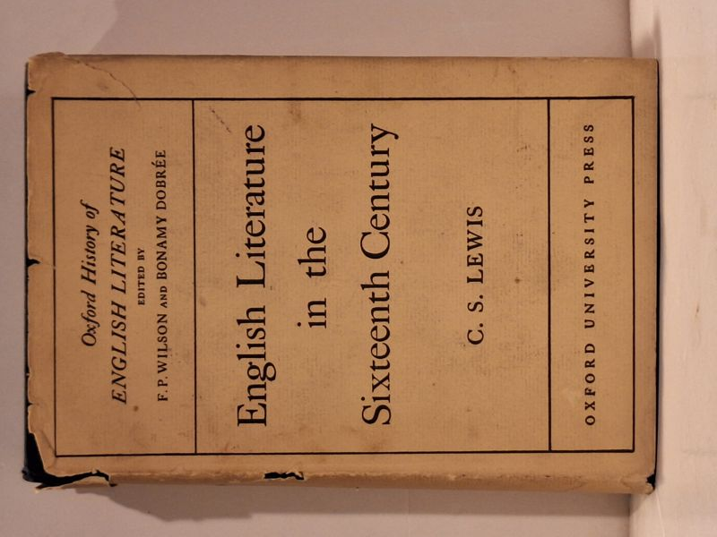

English Literature in the Sixteenth Century, Excluding Drama
C. S. Lewis · Oxford University Press, Oxford, 1954

C$75 · Good condition
Oxford at the Clarendon Press, 1954. First edition of Volume III of the Oxford History of English Literature (general editors F. P. Wilson and Bonamy Dobree). The completion of the Clark Lectures, Trinity College, Cambridge, 1944. Hardcover in original unclipped pictorial dust jacket; jacket shows chipping and small loss at the head and tail of the spine and along the panel edges. Boards clean, binding tight, text block clean with no foxing or prior-owner marks.
Details
- Publisher: Oxford University Press, Oxford, 1954
- Binding: Hardcover
- Edition: First Edition
- Condition: Good
- Dust jacket: Fair
- Category: Literary Criticism